遊びで植物を育てよう
2024/12/31
アンズの木に大きなミノムシがしました。
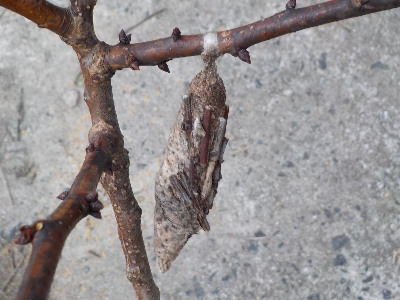
アンズの木を剪定していたらミノムシがいました。
枝を切ってしまったのでもうダメかな。どうなるのかな？。
【アンズTOP】
【果物TOP】
【園芸TOP】
2024/10/06
アンズの挿し木は今回も全滅です。
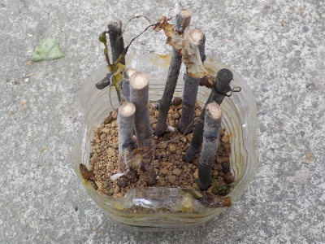
アンズの挿し木にまた失敗です。
いつもと同じですね。次からは接ぎ木や実生をやろうかな。
【アンズTOP】
【果物TOP】
【園芸TOP】
2024/06/26
アンズの挿し木をペットボトルでしました。
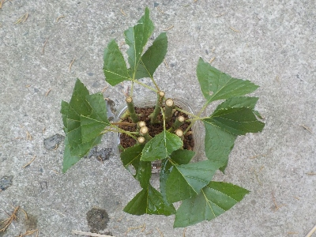
アンズが勢いよく成長していたので、枝を切りました。
切った枝で挿木です。
今年こそは成功するんじゃないかと、期待してやりました。
【アンズTOP】
【果物TOP】
【園芸TOP】
2024/03/17
アンズがちょっと咲きました。
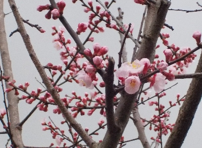
もうちょっとしたら全体がピンクになります。
去年より開花が遅いです。温暖化で早くなるよりは遅い方がいいですね。
【アンズTOP】
【果物TOP】
【園芸TOP】
2023/07/11
先端部分を使ったアンズの挿し木は枯れました。
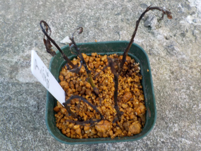
ユーチューバーが言ってた通り、先端部分を使った挿し木は失敗しました。
ちゃんと調べてからやれば良かったです。
あー。でもちゃんと調べてたらアンズの挿し木はしないなー。
【アンズTOP】
【果物TOP】
【園芸TOP】
2023/06/24
アンズの収穫が終わったので夏季剪定しました。
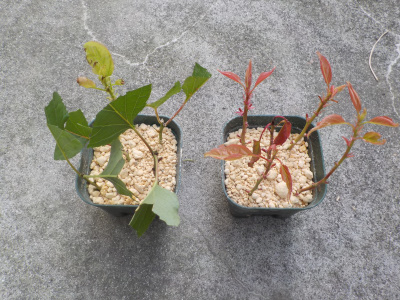
今年も剪定した枝を使って挿し木に挑戦です。
今までペットボトルでの挿し木で失敗してたので、今回は普通に挿し木することにしました。
何にも考えずに枝の先端を挿し穂にしたんですが、
先端は使わない方がいいってユーチューブがありました。どうなるかな。
【アンズTOP】
【果物TOP】
【園芸TOP】
2023/04/15
アンズの挿し木の葉っぱがなくなりました。
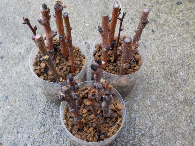
ちょこっとあった緑色の部分がなくなりました。
なかなかうまくいきませんね。次に挑戦するのは何時かな。
【アンズTOP】
【果物TOP】
【園芸TOP】
2023/04/09
アンズの挿し木の密閉をやめました。
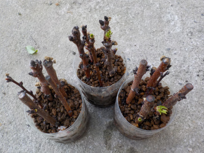
ちょっと木の表面が白っぽくなっていました。カビ？かな。
このままにしておくと更に白くなりそうなので外気に当てることにしました。
【アンズTOP】
【果物TOP】
【園芸TOP】
2023/03/19
アンズが満開です。

枝に花がいっぱい付いています。
実が沢山出来そうです。
【アンズTOP】
【果物TOP】
【園芸TOP】
2023/01/03
アンズの挿し木をしました。
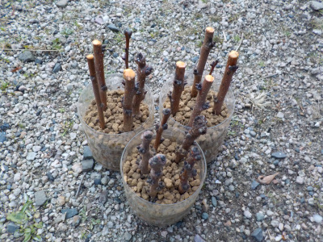
年末に剪定した枝を使って、ペットボトルで挿し木しました。
どうなるでしょうね。暖かくなったら花が咲いて、その後葉っぱが出ると思うんですけど、その後に根っこが出るかな？。
【アンズTOP】
【果物TOP】
【園芸TOP】
2022/12/31
アンズの剪定をしました。
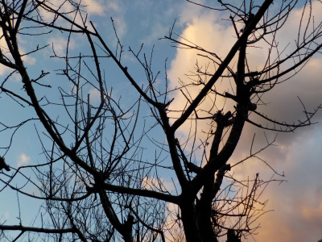
昔は大晦日には掃除したり買い物行ったりテレビ見たりしていましたが、そうゆうのはちょっとになりました。
普通の休日と同じ感じで剪定しました。アンズは毎年沢山伸びるので、切る量が多いです。
【アンズTOP】【果物TOP】【園芸TOP】
2022/06/29
アンズの挿し木は失敗です。
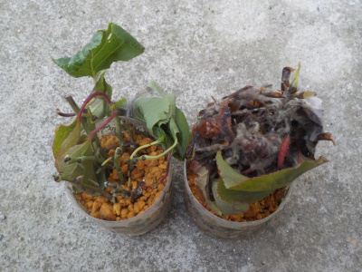
10日でここまで腐敗するとは思いませんでした。
アンズとペットボオトルは相性が悪いようです。
【アンズTOP】 【果物TOP】 【園芸TOP】
2022/06/19
ペットボトルにアンズの種を蒔きました。
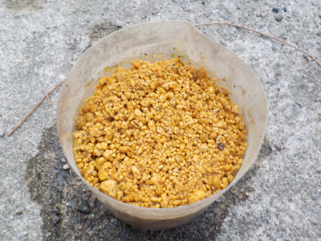
食べたアンズの種を7個埋めました。
来年の春に芽が出るのを期待しています。
【アンズTOP】 【果物TOP】 【園芸TOP】
2022/06/19
ペットボトルでアンズの挿し木をしました。
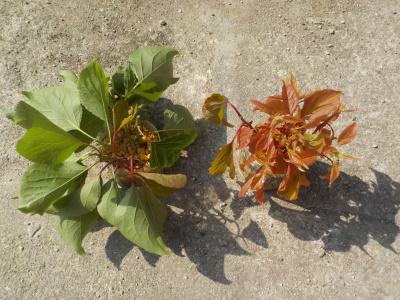
剪定した枝を挿し木しました。
新しく出た若い赤い芽と、緑の葉っぱの枝と分けてペットボトルに入れました。
今まで成功したことないので、両方とも失敗する可能性が高いですが、ひょっとしらた成功するかもしれません。
スモモや梅が成功しているので、アンズも成功していいと思うんですけど。
【アンズTOP】 【果物TOP】 【園芸TOP】
2022/06/18
アンズに何かの卵が産み付けられています。
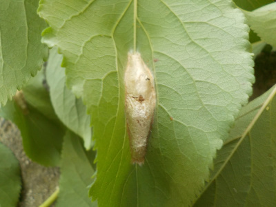
何の卵でしょうね？
低い位置の葉っぱ数カ所に産み付けられていました。
今後は木の下を歩くときは注意しようと思います。
【アンズTOP】 【果物TOP】 【園芸TOP】
2022/06/14
アンズのタネは今年は割らないで取り蒔きします。
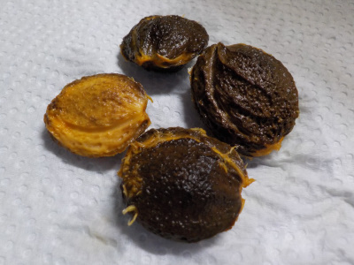
今までは硬い殻を割って直ぐに芽を出させていたんですが、ちゃんと育ったことがなかったです。
なので今回は殻割らないで土に埋めようと思います。来年の春まで発芽を待ちます。
【アンズTOP】 【果物TOP】 【園芸TOP】
2022/06/11
アンズがオレンジ色に近づいてきました。
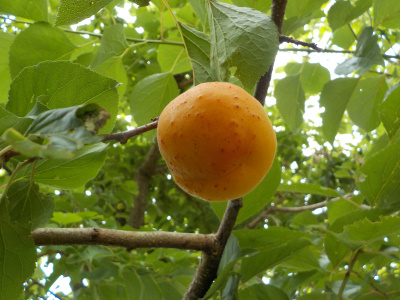
もう食べれそうな気がしますが、まだちょっと青いかな。
もうちょっと待ちます。
【アンズTOP】 【果物TOP】 【園芸TOP】
2022/04/17
アンズの小さな実が沢山出来ています。
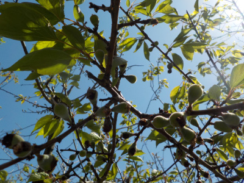
ほとんどが途中で落ちるとは思いますが、沢山実が出来ているのを見るのは気分がいいです。
【アンズTOP】 【果物TOP】 【園芸TOP】
2022/01/09
暗くなるまでアンズの剪定をしました。
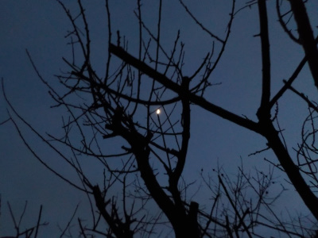
真ん中の白いのは月です。
剪定を始めた時間が遅かったので、やってるうちに暗くなってしまいました。
暗い所での作業は危険なので、次からは時間を計算して作業をしようと思いました。
【アンズTOP】 【果物TOP】 【園芸TOP】
2021/07/10
アンズの挿し木をしました。
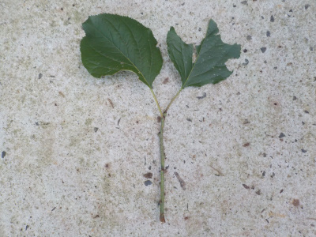
挿し木用の底面給水鉢を作ったので、気軽に1本だけ挿し木しました。【底面給水鉢についての内容はこちら】
切った枝を鉢の空いてるスペースに挿すだけなので、とっても簡単。
成功率はどうなるか分かりませんが、簡単なのはいいことです。
【アンズTOP】
【果物TOP】
【園芸TOP】
以前の記事
2021/06/13
アンズを食べました。
2021/03/14
アンズの花見をちょっとしました。
2020/08/09
アンズの芽が出ませんでした。
2020/06/28
アンズの種を植えました。
2020/06/20
アンズの種から根っこがでました。
2020/06/14
アンズの種はめちゃくちゃ硬かったです。
2020/06/07
アンズの挿し木は失敗です。
2020/02/15
アンズの挿し木をしました。
2019/09/23
杏子の挿し木結果です。
2019/07/07
杏子の挿し木が汚くなっていました。
2019/06/23
ペットボトルで杏子の挿し木に挑戦。
2018/06/10
杏を収穫しました。
2017/03/26
杏子の蕾がふくらんできました。
2016/03/21
今年も杏子の花が咲きました。
2015/03/28
あんずの花は綺麗ですね。
2014/04/19
杏子に実が出来ていました。
2013/04/28
杏子の実生
2013/03/17
杏子の花が咲き出しました。
2012/07/28
アンズは枯れましたね。
2012/07/08
杏子の挿し木も挑戦。
【アンズTOP】
【果物TOP】
【園芸TOP】
アンズはコンポートで食べます。
【おいしいものを食べよう。】【たくさん寝よう。】
【ソロ活をしよう!】【季節感のあることをしよう。】【動画視聴はほどほどに。】【当サイトの全てのコンテンツは無断転載禁止です。】